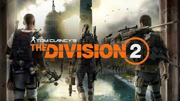

Tom Clancy's The Division 2 is an online action role-playing video game developed by Massive Entertainment and published by Ubisoft. The sequel to Tom Clancy's The Division (2016), it is set in a near-future Washington, D.C. in the aftermath of a smallpox pandemic, and follows an agent of the Strategic Homeland Division as they try to rebuild the city. The game was released for Microsoft Windows, PlayStation 4 and Xbox One on March 15, 2019. It received generally favorable reviews from critics, with most noting it as an improvement over the first installment.
INFO